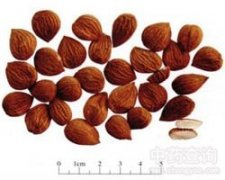

苦杏仁

拼音
Kǔ Xìnɡ Rén
别名
杏仁
来源
本品为蔷薇科植物山杏（苦杏）Prunus armeniaca L. var. ansu Maxim.、西伯利亚杏（山杏）Prunus sibirica L.、东北杏Prunus mandshurica （Maxim.）Koehne或杏Prunus armeniaca L.的干燥成熟种子。夏季采收成熟果实，除去果肉及核壳，取出种子，晒干。
生境分布
多栽培于低山地或丘陵山地。主产内蒙古、吉林、辽宁、河北、山西、陕西。
药材特点
落叶乔木，高达6m。叶互生，广卵形或卵圆形，长5～10cm，宽3.5～6cm，先端短尖或渐尖，基部圆形，边缘具细锯齿或不明显的重锯齿；叶柄多带红色，有2腺体。花单生，先叶开放，几无花梗；萼片5，花扣反折；花瓣5，白色或粉红色； 雄蕊多数；心皮1，有短柔毛。核果近圆形，直径约3cm，橙黄色；核坚硬，扁心形，沿腹缝有沟。花期3～4月，果期5～6月。
性状
本品呈扁心形，长1～1.9cm，宽0.8～1.5cm，厚0.5～0.8cm。表面黄棕色至深棕色，一端尖，另端钝圆，肥厚，左右不对称。尖端一侧有短线形种脐，圆端合点处向上具多数深棕色的脉纹。种皮薄，子叶2，乳白色，富油性。无臭，味苦。
性味
苦，微温；有小毒。
功能主治
降气止咳平喘，润肠通便。用于咳嗽气喘，胸满痰多，血虚津枯，肠燥便秘。
用法用量
4.5～9g，生品入煎剂宜后下。
化学成分
含苦杏仁甙（amygdalin）、脂肪油、苦杏仁酶（emulsin）、苦杏仁甙酶（amygdalase）、樱叶酶（prunase）、雌酮、α-雌二醇、链甾醇等。
药理作用
1：无药理作用数据
摘录
《中国药典》